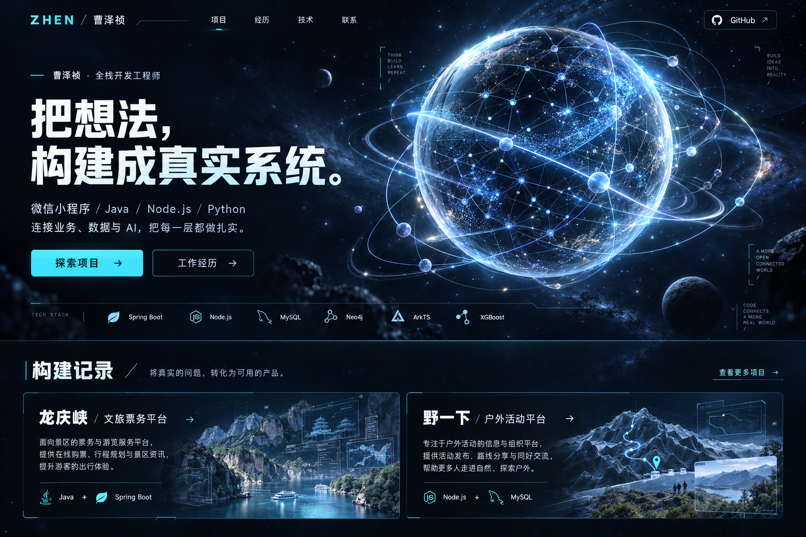
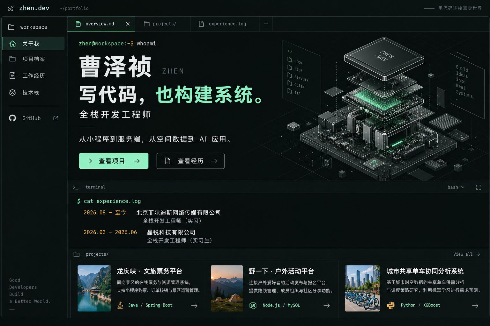
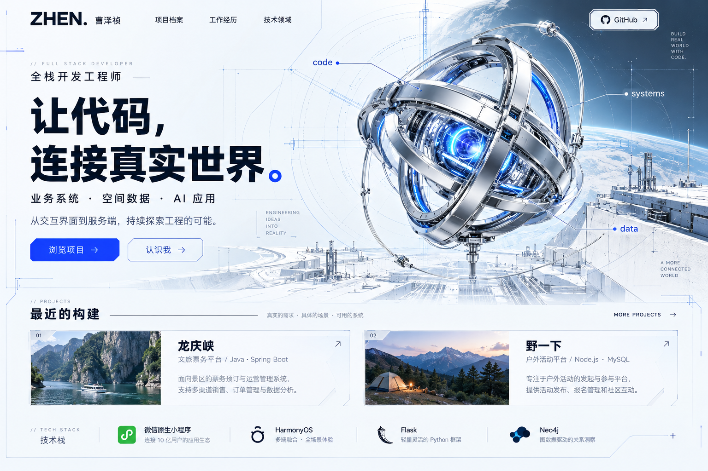

2026.08—至今
北京菲尔迪斯网络传媒有限公司
全栈开发工程师（实习）
参与龙庆峡文旅票务平台与野一下户外活动平台开发，覆盖小程序、运营后台、服务端、数据库及部署维护。
ZHEN / 曹泽祯 / 个人主页重做提案
以下是 AI 生成的视觉概念效果图，用于选择布局、配色与主视觉方向。它们不是已实现网页的截图。中文、细节和交互以正式实现为准。点击效果图可查看原图。
深空蓝 × 电光青。轨道核心与立体神经网络，视觉冲击最强。

石墨黑 × 磷光绿 × 琥珀。文件树、代码标签页、经历日志，开发者气质最鲜明。

银白 × 钴蓝。金属计算核心与工程蓝图，明亮、精密，有未来硬件实验室的感觉。

依据最新个人经历库整理，正式版本将包括个人介绍、精选项目、实习时间线、技术领域和联系方式。
2026.08—至今
全栈开发工程师（实习）
参与龙庆峡文旅票务平台与野一下户外活动平台开发，覆盖小程序、运营后台、服务端、数据库及部署维护。
2026.03—2026.06
全栈开发工程师（实习生）
参与静脉输液治疗领域知识图谱的构建与应用，围绕知识检索、RAG 问答、推荐规则及管理页面展开开发。
北京菲尔迪斯实习
文旅票务平台
连接游客小程序、运营后台与交易后端，覆盖选票、订单、电子票券及退款流程。
微信原生小程序 / Java 21 / Spring Boot / MyBatis / MySQL / Flyway
北京菲尔迪斯实习
户外活动管理平台
围绕参与者、主理人与工作人员组织活动发布、审核、报名、保险登记及签到核销。
微信原生小程序 / Node.js / MySQL / COS / GitHub Actions
晶锐科技实习 / 2026.03—2026.06
知识服务与 RAG 应用
围绕临床指南、专家共识与护理规范，参与领域知识组织、检索问答及规则匹配。
Python / Flask / Vue 3 / Neo4j / MongoDB / RAG
毕业设计 / 2025.11—2026.04
空间数据与可解释建模
通过数据处理、统计看板、地图展示、需求建模与模型解释，分析共享单车与地铁接驳。
Python / Flask / GeoPandas / NetworkX / XGBoost / SHAP / Leaflet
参赛项目 / 2025.10—2025.12
交通法律咨询 AI 小程序
串联原生聊天页面、云函数与模型接口，围绕事故描述组织结构化参考回复。
微信原生小程序 / Node.js / CloudBase / DeepSeek API
移动端开发 / 2025.01—2025.04
HarmonyOS 智慧社区物业管理平台
以 ArkUI 声明式界面连接物业信息、邻里动态与社区生活服务。
ArkTS / ArkUI / Stage / UIAbility / AppStorage / HTTP API
参赛项目 / 2024.11—2025.01
原生购物流程与业务接口
基于既有框架参与商品、分类、购物车及用户中心开发，对接 Java 业务后端。
微信原生小程序 / Java / Spring Boot / MyBatis / MySQL / Shiro
两项北京菲尔迪斯项目的参与起止未确认，不用任职时间替代。共享单车暂沿用全栈经历库日期。页面不使用缺少依据的性能比例、获奖、用户规模及负责人称谓。